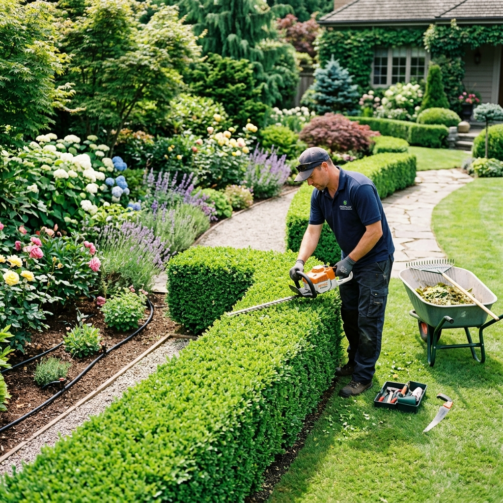

Located in the bustling neighborhood of Indira Nagar, this terrace garden project was designed to provide a private, tranquil escape for the homeowners. The challenge was to create a lush garden feel on a hardscaped rooftop with limited load-bearing capacity.
We utilized lightweight soil mixtures and fiberglass planters to introduce a variety of ornamental plants, aromatic herbs, and small fruit trees. A custom wooden pergola was installed to provide shade, creating a comfortable outdoor dining area perfect for evening gatherings.
To ensure privacy from neighboring buildings, we implemented a natural green screen using tall bamboo and climbing vines. This terrace has been successfully transformed into a vibrant, green oasis in the heart of the city.